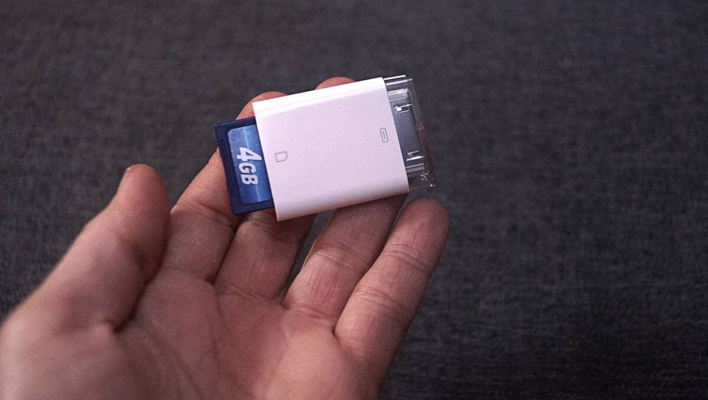
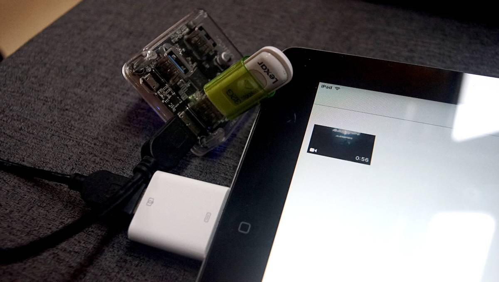
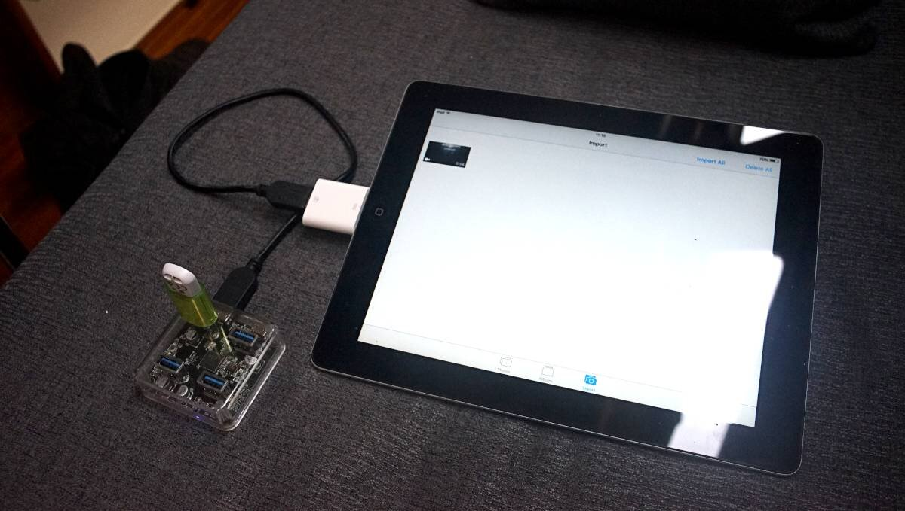

ipad media station
2025.03.26
Victoria, B.C.
In the summer at anchor, we usually use Rek's main work computer, a Macbook Air 2011, as a media station, but watching movies drains the battery a lot, eating into Rek's work time, so we decided it was time to set up a dedicated media station.
A few years ago, we used a Chromebook for this purpose, but we had to charge it through the inverter(nowadays our laptops are all DC-powered, see charging electronics). We looked into buying some kind of small monitor, which we could wire into our DC system, and watch movies by connecting an external hard drive. Unfortunately, much of the 12V monitors we looked at were very expensive, or too cheap. Then we realized we already had the perfect screen on hand: an Ipad2.
Rek purchased this Ipad in 2012. We used it to draw, and play games, but it is now no longer possible to update it past iOS 9.3.5. For an Apple device, that is a death sentence. We've kept it around this whole time, but weren't using it.
An Ipad really is an ideal screen(9.7 in | 24.6 cm, 1024-by-768-pixel resolution at 132 pixels per inch), we can power it on a 12V system, it draws very little power, and we already own one.
The only problem was that getting files onto an Ipad, without jailbreaking it, is difficult. Most file-managing apps(like the Files App), require a later iOS version. In all though, we prefer to not have to install apps.
We found a camera connection kit on Ebay (30-pin male to SD card and a 30-pin male to USB) that we can use to transfer videos onto the Ipad.
It is important to not that the Ipad2's 30-pin dock connector can only handle 20ma of current. Back in 2011, with the release of iOS 4.2, Apple crippled the Camera Connection Kit by implementing a software limitation that dropped the power output of the CCK to 20mA from 100mA.
Plugging a 32GB flash drive will result in the Ipad complaining that the accessory is "using too much power". Using a USB key is possible, but make sure it doesn't require more than 20ma to work, or use a hack which involves connecting an unpowered USB hub inline. I've tested it with a 32GB flash drive, it works. The UBS hub likely dampens the flash drive's initial start-up spike in current, keeping it under the threshold, which doesn't triggers the "too much power" warning.
How To Format a Video to Play on an Ipad2
For a video to work on an Ipad, it must be encoded in a supported codec and video format.
Supported Video Compression Codecs: H.264, H265, and MPEG-4.
Supported Video Container Formats: .mov, .mp4, and .m4v.
Supported Resolution and Bitrate: Videos with resolutions up to 1080p, 30 FPS, are compatible, but if the resolution or bitrate is too high, the Ipad will have difficulty playing it(or won't at all).
All of our video files were scaled down, compressed and converted into .mp4s using ffmpeg with the following command:
ffmpeg -i input.mp4 -vcodec libx264 -profile:v main -level 3.1 -preset medium -crf 23 -x264-params ref=4 -acodec copy -vf "scale=-2:540:flags=lanczos" -movflags +faststart output.mp4
To batch render all of the videos files in a directory named "converted":
for f in *.mkv; do ffmpeg -i "$f" -vcodec libx264 -profile:v main -level 3.1 -preset medium -crf 23 -x264-params ref=4 -acodec copy -vf "scale=-2:540:flags=lanczos" -movflags +faststart "converted/$
Filenames
The Ipad won't read files on an SD card that doesn't follow the folder structure that's created when the card is used in a camera. We used a card that already had that folder structure, and deleted all existing photo media.
The folder structure on our card looks like like this:
DCIM > DSC03012
Note: Yours may well be different
The media file itself also needs a name that is 8-digits long, with sequential numbers and/or letters, like DCM10596.mp4, for the Ipad to see it.
The video then appears in Photos, and is watchable from there. It's kinda weird and hacky, but it works, and we get to give an older device a purpose. Compressing videos en-masse also helped us save space on our external harddrives.
Note that converting videos takes a lot of time, a film that is 90 minutes long may take 45 minutes to complete. I started this process in late March on a computer dedicated to this purpose(while we're connected to shore power).